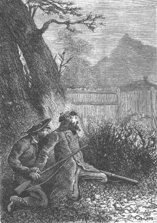
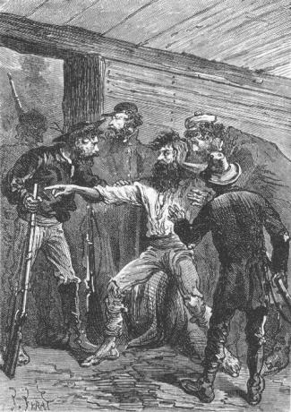
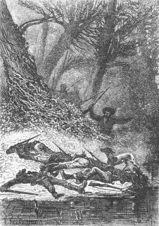

The next day, the 18th of February, was devoted to the exploration of all of the wooded part which formed the shore from Reptile Promontory to Falls River. The colonists could investigate deep into this forest because, extending between the two shores of Serpentine Peninsula, its width was only three to four miles. The trees, by their height and their thick branches, attested to the fertility of the soil which was more astonishing here than on any other portion of the island. It was like a corner of the virgin forests of America or of central Africa transported to this temperate zone. They were led to the conclusion that these superb plants found in this soil a moisture in the upper level but heat at the interior due to volcanic fires, a warmth which did not belong to the temperate climate. The dominant species were these kauris and these eucalyptuses which took on gigantic dimensions.
But the goal of the colonists was not to admire these magnificent plants. They already knew that, in this connection, Lincoln Island deserved to rank with the Canaries group which was first called Fortune Islands. Now alas, their island no longer belonged to them completely; others had taken possession of it, criminals who trampled everything underfoot and they must destroy them to the last.
However carefully they looked, they found no more traces on the western coast. No more footprints, no more cuts on the trees, no more cold cinders, no more abandoned camps.
“This does not astonish me,” said Cyrus Smith to his companions. “The convicts landed on the island near Flotsom Point and they immediately dashed into the forests of the Far West after having crossed the Tadorn marshes. They then very nearly followed the route that we had taken on leaving Granite House. This explains the traces that we recognized in the woods. But on arriving on the coastline, the convicts realized that they would find no suitable retreat there and it was then that, after having ascended northward, they discovered the corral...”
“Where they have perhaps returned...” said Pencroff.
“I do not think so,” replied the engineer, “because they must have assumed that our search would carry us in that direction. The corral is only a storehouse for them and not a fixed camp.”
“I agree with Cyrus,” said the reporter, “and in my opinion it is among the buttresses of Mount Franklin that the convicts have found a retreat.”
“Then, Mister Cyrus, straight to the corral!” shouted Pencroff. “We must finish the job and up until now we’ve been wasting our time!”
“No, my friend,” replied the engineer, “you forget that we had an interest in knowing if the forests of the Far West concealed some dwelling. Our exploration has a double purpose, Pencroff. If on the one hand we must punish a crime, on the other hand we owe a debt of gratitude.”
“You are right, Mister Cyrus,” replied the sailor. “Nevertheless, it is my opinion that we will find this gentleman only when he wishes it.”
And really Pencroff was only expressing everyone’s opinion. It was likely that the stranger’s retreat was no less mysterious than was he himself!
That evening the cart halted at the mouth of Falls River. Sleeping arrangements followed their custom and they took the usual precautions for the night. Herbert again became the vigorous youth that he had been before his illness, profiting largely from this existence in the open air between the breezes from the ocean and the vivifying atmosphere of the forests. His place was no longer in the cart but at the head of the caravan.
The next day, the 19th of February, the colonists abandoned the shore where, beyond the mouth, the basalts of all shapes were so picturesquely piled up, and ascended the left bank of the watercourse. The route had been partly cleared during previous excursions from the corral to the west coast. The colonists then found themselves at a distance of six miles from Mount Franklin.
The engineer’s plan was as follows: to carefully examine the entire valley whose bottom formed the bed of the river, and to cautiously reach the neighborhood of the corral; if the corral was occupied, to take it by force; if it was not, to entrench themselves there and make it the center of operations with the object of exploring Mount Franklin.
This plan was unanimously approved by the colonists and truly they were longing to regain complete possession of their island.
They travelled along the narrow valley which separated the two most powerful buttresses of Mount Franklin. The trees, pressed together on the banks of the river, became rarer toward the upper zones of the volcano. It was uneven hilly ground, very suitable for ambushes, over which they moved with care. Top and Jup marched as guides and dashing to the right and to the left into the thick brushwood, they competed with intelligence and with skill. But there was nothing to indicate that the banks of the watercourse had been recently frequented, nothing to announce either the presence or the proximity of the convicts.
About five o’clock in the evening the cart stopped about six hundred feet from the palisaded enclosure. A semicircular curtain of large trees still concealed it.
They must now reconnoiter the corral in order to know if it was occupied. To go there openly in full daylight, with the convicts very likely in ambush, would be to invite some foul play as had struck Herbert. It would be better to wait for night to come on.
However, Gideon Spilett wanted, without further delay, to reconnoiter the approaches to the corral and Pencroff, at the end of his patience, offered to accompany him.
“No, my friends,” replied the engineer. “Wait for night. I will not allow any of you to expose yourself in full daylight.”
“But, Mister Cyrus...” replied the sailor, barely disposed to obey.
“I beg you, Pencroff,” said the engineer.
“So be it!” replied the sailor, who vented his anger at the convicts with the roughest language of his maritime repertoire.
The colonists thus remained near the cart and carefully surveyed the neighboring parts of the forest.
Three hours passed. The wind died out and an absolute silence reigned under the large trees. The breaking of a twig, the noise of footsteps on the dry leaves or any movement through the grass would have been heard without difficulty. Everything was quiet. Besides, Top, lying on the ground with his head resting on his paws, gave no sign of concern.
At eight o’clock, the evening had advanced so that the reconnaissance could be made under good conditions. Gideon Spilett was ready to leave accompanied by Pencroff. Cyrus Smith gave his consent. Top and Jup would remain with the engineer, Herbert and Neb because any bark or cry uttered at an inappropriate time would give the alarm.
“Do not get involved in any imprudence,” Cyrus Smith advised the sailor and the reporter. “You are not to take possession of the corral but only to discover if it is occupied or not.”
“It is agreed,” replied Pencroff.
And they both left.
Over a radius of thirty to forty feet, the darkness already rendered objects invisible thanks to the thick foliage of the trees. The reporter and Pencroff, stopping for any noise that aroused their suspicion, advanced very carefully.
They walked at a distance from each other in order to offer less of a prize to any gunfire. And, as a matter of fact, they expected a gunshot at any moment.
Five minutes after they left the cart, Gideon Spilett and Pencroff reached the edge of the woods at the clearing in front of the palisaded enclosure.
They stopped. Dim light still bathed the prairie, devoid of trees. The door of the corral, thirty feet away, seemed to be closed. These thirty feet to be crossed between the edge of the woods and the enclosure constituted the danger zone, to use an expression borrowed from ballistics. In fact, one or more bullets fired from the top of the palisade would throw to the ground anyone who ventured into this zone.
Gideon Spilett and the sailor were not men to recoil but they knew that any imprudence on their part, in which they would be the first victims, would affect their companions. With themselves killed, what would become of Cyrus Smith, Neb and Herbert?
But Pencroff, overexcited by feeling himself so near the corral where he supposed that the convicts had found refuge, was going to move forward when the reporter held him back with a firm hand.
“In a few minutes it will be completely dark,” murmured Gideon Spilett into Pencroff’s ear, “and that will be the moment to act.”

“In a few minutes,” murmured Gideon Spilett...
Pencroff convulsively squeezed the butt of his gun, restraining himself, waiting and fuming.
Soon the last glimmer of twilight was completely gone. The darkness seemed to leave the thick forest and envelope the clearing. Mount Franklin rose like an enormous screen in front of the western horizon, and darkness came on rapidly as it does in regions of lower latitude. This was the moment.
From the moment that they had posted themselves at the edge of the woods, the reporter and Pencroff had not lost sight of the palisaded enclosure. The corral seemed to be absolutely deserted. The top of the palisade formed a line a little darker than the surrounding environment and nothing impaired its distinctness. However, if the convicts were there, one of them would be posted to guard against any surprise.
Gideon Spilett seized the hand of his companion and they both advanced, crawling toward the corral with their guns ready to fire.
They reached the door of the enclosure without a single ray to light up the darkness.
Pencroff tried to push the door open, which the reporter and he supposed was closed. However the sailor was able to determine that the exterior bars were not in place.
They could therefore conclude that the convicts were occupying the corral and that they had really fastened the door so that it could not be forced.
Gideon Spilett and Pencroff listened.
There was no noise from inside the enclosure. The sheep and the goats, doubtless sleeping in their stables, did not disturb the calm of the night.
The reporter and the sailor, hearing nothing, asked themselves if they should climb the palisade and get into the corral. That would be contrary to Cyrus Smith’s instructions.
It was true that the operation could succeed but it could also miscarry. Now if the convicts suspected nothing, if they had no knowledge of the expedition undertaken against them, if in short there existed at this moment a chance to surprise them, should they jeopardize this chance by thoughtlessly going over the palisade?
That was not the reporter’s opinion. He felt that it was best to wait until the colonists were all together before attempting to get into the corral. This much was certain, that they could come right up to the palisade without being seen and that the enclosure did not appear to be guarded. This point settled it remained only to return to the cart which they ventured to do.
Pencroff probably agreed with this way of looking at things because he had no difficulty in following the reporter when the latter retreated to the woods.
A few minutes later the engineer was brought up to date with the situation.
“Well,” he said after some thought, “I now have reason to believe that the convicts are not at the corral.”
“We will surely know that,” replied Pencroff, “when we have scaled the enclosure.”
“To the corral, my friends!” said Cyrus Smith.
“Shall we leave the cart in the woods?” asked Neb.
“No,” replied the engineer, “it is our ammunition and supply wagon and if need be it will serve as an entrenchment.”
“Forward then,” said Gideon Spilett.
The cart left the woods and began to roll without noise toward the palisade. It was just as dark and quiet as when Pencroff and the reporter had been crawling on the ground. The thick grass completely muffled the noise of their footsteps.
The colonists were ready to fire. On Pencroff’s order, Jup stayed behind. Neb held Top in leash so that he would not rush forward.
Soon the clearing appeared. It was deserted. Without hesitating, the small troop went toward the enclosure. In a short space of time the danger zone was crossed. No shot had been fired. When the cart reached the palisade, it stopped. Neb was at the head of the onagers to hold them back. The engineer, the reporter, Herbert and Pencroff then went to the door in order to see if it was barricaded from the inside...
One of the doors was open!
“What were you saying,?” the engineer asked, turning toward the sailor and Gideon Spilett.
Both were stupefied.
“Upon my salvation,” said Pencroff, “this door was closed just now.”
The colonists then hesitated. Had the convicts been in the corral when Pencroff and the reporter had made their reconnaissance? That could not be doubted since the door, closed at the time, could only have been opened by them. Were they still there or had one of them gone out?
All of these questions were instantly on everyone’s mind but what should they do?
At his moment Herbert, who had advanced a few feet into the enclosure, rushed out and seized Cyrus Smith’s hand.
“What is it?” asked the engineer.
“A light!”
“In the house?”
“Yes!”
All five advanced toward the door and in fact, through the panes of the window which faced them, they saw a feeble flickering light.
Cyrus Smith quickly made his decision.
“It is a unique chance,” he said to his companions, “to find the convicts in the house expecting nothing. They are ours! Forward!”
The colonists moved quietly inside the enclosure, with weapons ready to fire. The cart had been left outside, guarded by Jup and by Top, who had been prudently tied to it.
Cyrus Smith, Pencroff and Gideon Spilett on the one side and Herbert and Neb on the other, ran along the palisade, observing that this part of the corral was absolutely dark and deserted.
In a few minutes all were at the house, in front of the door which was closed.
Cyrus Smith signaled to his companions to hold back while he approached the window pane then feebly lit by an inside light.
He looked into the only room which formed the ground floor of the house.
On the table was a lighted lamp. Near the table was the bed formerly used by Ayrton.
On the bed lay the body of a man.
Suddenly Cyrus Smith drew back and in a stifling voice:
“Ayrton!” he shouted.
Immediately the door was forced rather than opened and the colonists rushed into the room.
Ayrton seemed to be sleeping. His appearance showed that he had suffered long and cruelly. They saw large bruises on his wrists and ankles.
Cyrus Smith leaned over him.
“Ayrton!” shouted the engineer, seizing the arms of him whom they had found again under such unexpected circumstances.
On hearing his name, Ayrton opened his eyes, looked at Cyrus Smith and then at the others:
“You,” he shouted, “you?”
“Ayrton! Ayrton!” repeated Cyrus Smith.
“Where am I?”
“In the house at the corral!”
“Alone?”
“Yes!”
“But they are coming!” shouted Ayrton. “Defend yourself! Defend yourself!”

“But they are coming!” shouted Ayrton.
And Ayrton fell back exhausted.
“Spilett,” the engineer then said, “we may be attacked at any moment. Bring the cart into the corral. Then barricade the door and come back here.”
Pencroff, Neb and the reporter hastened to carry out the engineer’s orders. There was not a moment to lose. Perhaps the cart itself was already in the hands of the convicts!
In an instant the reporter and his two companions crossed the corral and reached the door of the palisade behind which they heard Top growling dully.
The engineer, leaving Ayrton for a moment, left the house, ready to fire. Herbert was at his side. They both surveyed the top of the buttress which overlooked the corral. If the convicts were in ambush there they could kill the colonists one by one.
At this moment the moon appeared in the east, above the black curtain of the forest, and a white sheet of light spread out over the interior of the enclosure. The corral was fully illuminated, with its cluster of trees, the small stream which watered it and its wide carpet of grass. The house and a part of the palisade stood out in white against the side of the mountain. On the opposite side, toward the door, the enclosure remained dark.
A black mass soon appeared. It was the cart which entered the circle of light and Cyrus Smith could hear the noise of the door which his companions had closed again by firmly fastening the bars on the inside.
But at that moment, Top broke his leach, barked furiously and rushed toward the back of the corral to the right of the house.
“On guard, my friends, and take aim...,” shouted Cyrus Smith.
The colonists put their guns to their shoulders and waited for the moment to fire. Top barked without letup and Jup ran after the dog, making sharp hisses.
The colonists followed him and reached the small stream which was overshadowed by large trees.
And there, in full light, what did they see?
Five bodies lying on the bank!

Five bodies lying on the bank!
They were those of the convicts who four months earlier had set foot on Lincoln Island.